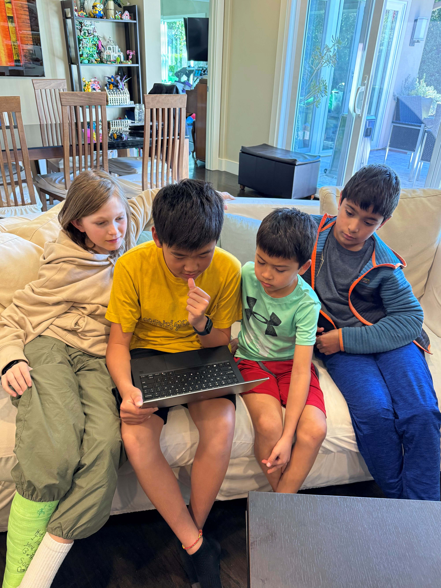
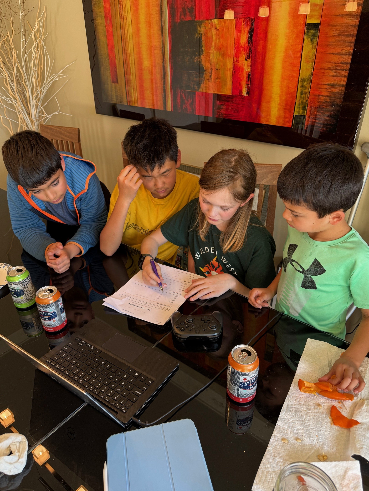
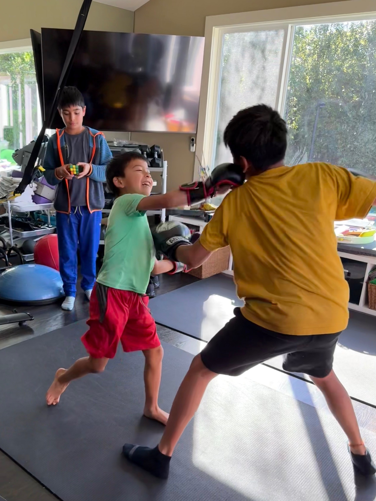

Quest Craft
Session 2
Design — The Deep Dive
March 8, 2026 | Ethan, Eins, Nathan & Andrew
From Concept to Complete Game Design in One Session
Today, Ethan, Eins, Nathan, and Andrew designed every detail of their video game — and Andrew’s hand-drawn illustrations became real game assets.
7 design documents. 15 castle floors. 3 boss fights. An art direction that shifted from pixel art to something far more ambitious.

The whole team, one laptop, and an AI partner — designing Split together
SPLIT
You’re a jello cube trapped in an ancient castle buried beneath desert sand. Fight your way up 15 floors — shooting pieces of yourself, crafting health at cooking pots, and unlocking elemental powers — until you face the three bosses that stand between you and the rooftop. Every attack costs body mass. Every choice matters.
Andrew’s Artwork

The Jello CubeYour player character — translucent, jiggly, and determined to escape

The Sanitizer WarriorA purple-skinned enemy with spiked hat, syringe weapon, and sanitizer backpack
Original illustrations by Andrew (11) — Artist & Visual Designer
What They Built Today
- 7 complete design documents — Characters, Story/World, Gameplay, Levels, Art Style, Sound/Music, Controls. Every aspect of Split is now documented and ready to build.
- Andrew’s original artwork processed into game assets — his hand-drawn illustrations of the jello cube player, Sanitizer Warrior enemy, and game items were analyzed by AI, split into individual sprites, and organized into the game’s asset pipeline. The team shifted their entire art direction from pixel art to Andrew’s richer, more realistic illustration style.
- A 15-floor castle with distinct zones — dark exploration floors, a parkour speed zone with crumbling platforms and lasers (floors 9–11), a deadly slow-paced gauntlet (floors 12–14), and an epic 3-phase final boss on the rooftop.
- A mass-based combat system where health IS ammo — every Jello Shot costs body mass, creating constant risk/reward tension. Plus cooking pots where you craft health from jello powder + water.
- 3 unique enemies and 3 bosses, each with distinct attack patterns and a “dodge, learn, punish” philosophy inspired by Hollow Knight and Dead Cells.
- “Earthquake Mode” — an extreme difficulty where the castle crumbles around you, platforms never respawn, and completing it unlocks a secret ending.
- Full Nintendo Pro Controller mapping — every button assigned to a game action, decided by the team together.
Skills Unlocked
Game Design
Designed combat mechanics, enemy behaviors, boss fights, difficulty curves, and 15-floor level progression from scratch
Systems Thinking
Created interconnected systems: mass = health = ammo, cooking for healing, elemental pills from shrines, environmental sun/drying hazards
AI-Assisted Art Pipeline
Took hand-drawn artwork, uploaded it, and used AI to analyze, split multi-image files into individual sprites, organize into folders, and generate a detailed asset catalog. Physical art became digital game assets.
Collaborative Decision-Making
4 kids with different strengths (artist, designers) making consensus decisions. Nathan noted “everybody’s ideas are very important to the project being successful”
Hardware Integration
Mapped every game action to specific Pro Controller buttons, understanding how physical input devices connect to game software
Creative Storytelling
Designed environmental storytelling with no text dumps — players discover the castle’s history through exploration, light, and atmosphere
Version Control
Committed and pushed work to GitHub. Both Ethan and Andrew highlighted this as a key lesson.

The team mapping every controller button to a game action — the moment software design meets hardware
Game Design Concepts
- Interconnected risk/reward — your body mass is simultaneously your health, your ammo supply, and your size (which affects what passages you can fit through)
- Difficulty curve architecture — 15 floors that progress from tutorial to exploration to parkour to gauntlet to final boss, each zone introducing new mechanics
- Environmental storytelling — ancient castle buried under desert sand, no dialogue, history discovered through exploration
- Boss fight design — each boss has multiple phases with distinct mechanics, inspired by Hollow Knight’s Radiance fight
How This Maps to LASD Illuminate: Today demonstrated design thinking at its finest. The team took a concept they brainstormed two weeks ago and systematically decomposed it into 7 designable components — characters, world, gameplay, levels, art, sound, and controls. They experienced the full arc from “what if?” to “here’s exactly how it works.” Andrew’s integration was a highlight: his hand-drawn artwork was processed by AI into game-ready assets in real time, showing how physical creativity and digital tools amplify each other. Every design document they wrote today becomes part of their exhibition story: “Here’s HOW we designed a game.”
What They Said
Eins: “This process would be a lot more fun than I thought it would be.”
Ethan: “I learned to commit and push or else it won’t save!”
Nathan: “I learned that everybody’s ideas are very important to the project being successful.”
Andrew: “I learned the importance of committing and pushing for this project.”
What Excites Them Most
Eins: “People trying to grind on our game but failing miserably.”
Ethan: “Beating the bosses in Earthquake Mode.”
Nathan: “Seeing how the game has changed from when we first played it to now.”
Andrew: “Seeing how the graphics in the game turn out.”
The hardest decision was how to make the levels and the overall design of the levels. — The whole team
Hard Coding Deserves Hard Play

Recharging between design sprints. Hard coding deserves hard play.
◆ ◆ ◆